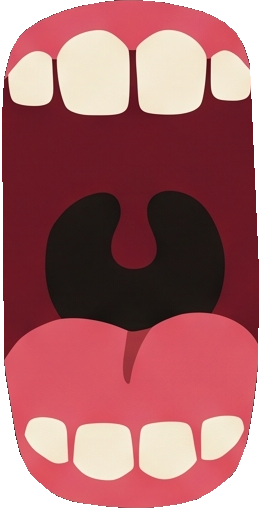
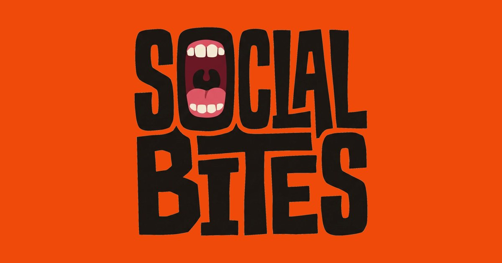
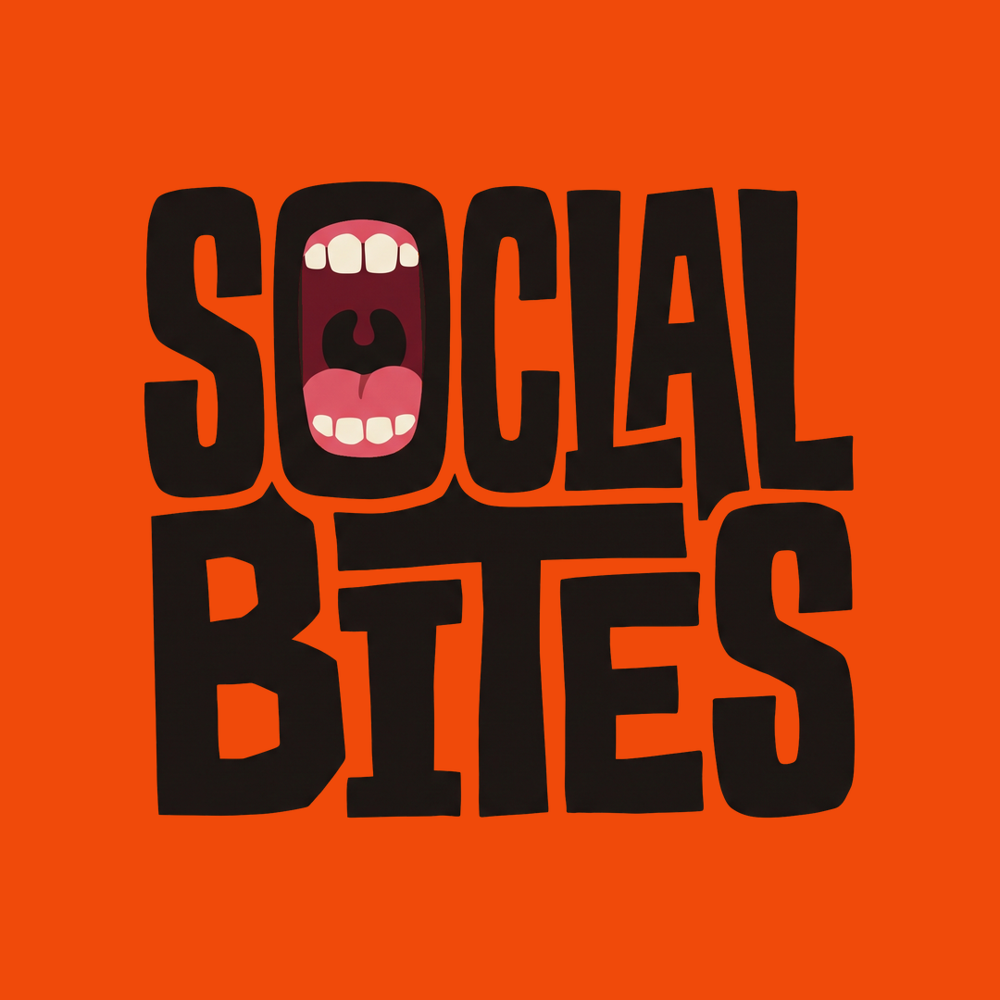
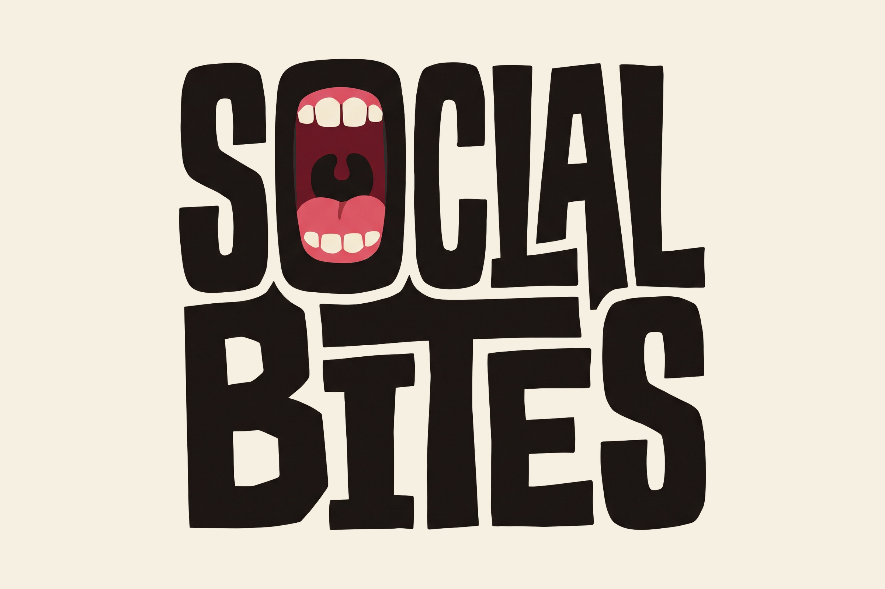
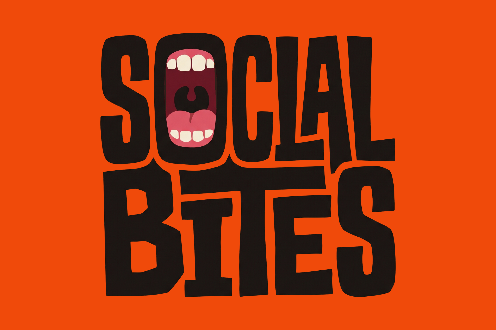
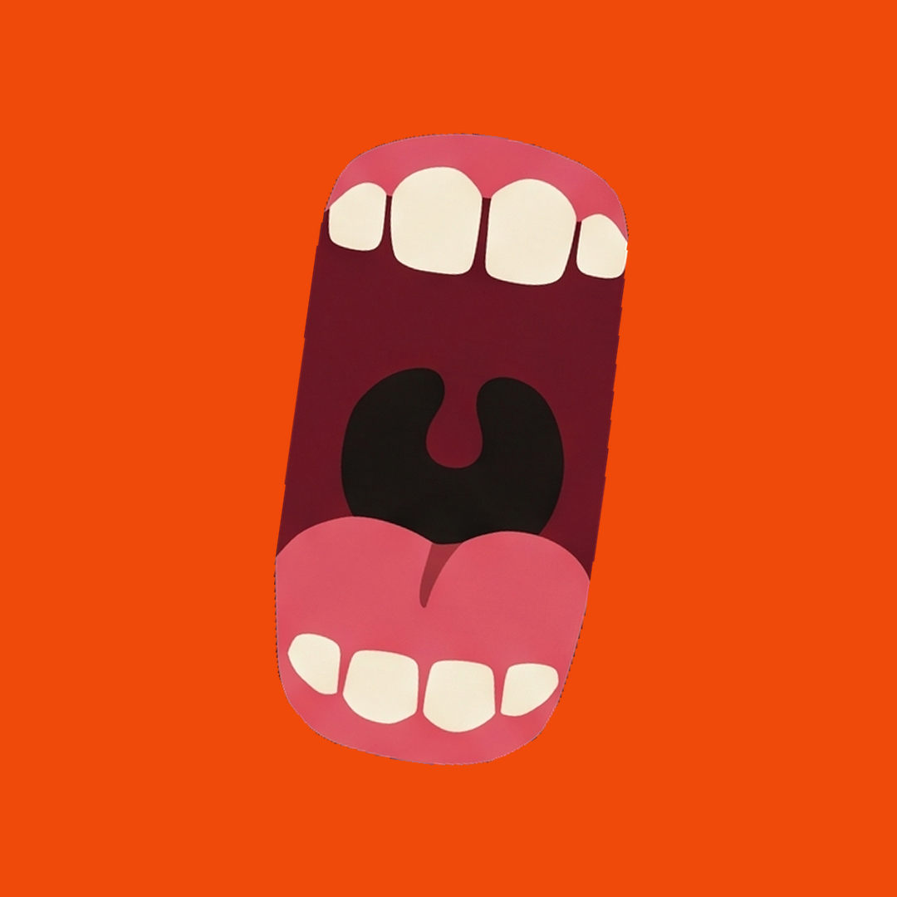
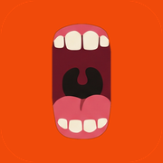

Marke
Wir sind ein Kollektiv aus Creatorn, die sich für jedes Projekt gezielt zusammenstellen, um es bestmöglich umzusetzen. Vor und hinter der Kamera: Content Creator, Influencer-Talente, Filmemacher, Marketing-Strategen.
Was wir machen
Food Content, Openings und Branding für Gastro und Marken aus Berlin. Social Media trifft echtes Offline-Marketing. Drei Abläufe: Bites Opening für neue Läden, Bites for Gastro für bestehende Läden, Bites for Brands für Ketten und Marken.
- Online plus offline.Jedes Projekt bekommt mindestens eine Aktion, die Leute vom Handy in den Laden holt.
- Erst das Ziel, dann der Content.Mehr Gäste, ein Opening, ein neues Gericht. Jede Idee muss darauf einzahlen.
- Hook in drei Sekunden.Was in den ersten drei Sekunden nicht packt, wird weggescrollt.
- Nur echte Zahlen.Keine geschätzten Views und keine erfundenen Zitate. Zahlen immer mit Quelle und Stand.
Logo
Die Wortmarke ist handgezeichnet und verzahnt. Der Mund ersetzt das O. Das Logo ist schwarz, Farbe kommt nur aus dem Mund und aus dem Grund.

Schutzzone
Rundum mindestens so viel Platz, wie der Mund breit ist. Darin stehen keine Texte, Kanten oder anderen Logos.
Mindestgröße
Digital mindestens 40 px hoch. Im Druck mindestens 18 mm breit. Darunter nur die Bildmarke Mund verwenden.
Bildmarke
Der Mund allein funktioniert als Profilbild, Favicon, Sticker und Stempel. Er darf leicht gekippt stehen, 8 Grad gegen den Uhrzeigersinn wie auf der Website.
Bitte nicht
Verzerren
Drehen
Umfärben
Schatten und Effekte
Auf unruhige Bilder
Die Vektor-Datei (SVG) ist noch in Arbeit. Bis dahin das PNG in voller Größe nutzen: reicht für Web, Social und Druck bis etwa A5. Eine helle Version für dunkle Flächen kommt mit der Vektor-Datei.
Farben
Creme als Grund, Tinte für Schrift und Logo, Orange als Signal. Pink gibt es nur im Mund des Logos. Klick auf einen Farbcode kopiert ihn.
Kontrast und Lesbarkeit
| Kombination | Kontrast | Erlaubt für |
|---|---|---|
| Tinte auf Creme | 15,1 : 1 | Alles, auch kleine Schrift |
| Orange dunkel auf Creme | 5,1 : 1 | Kleine orange Schrift, Labels, Links |
| Orange auf Creme | 3,3 : 1 | Nur große Schrift ab 24 px, Flächen, Punkte |
| Tinte auf Orange | 4,6 : 1 | Schrift auf orangen Flächen, Knöpfe |
| Creme auf Tinte | 15,1 : 1 | Alles, auch kleine Schrift |
CMYK-Werte stammen aus den Druckdaten der Visitenkarten. Große schwarze Flächen im Druck in sattem Schwarz 40/30/30/100, kleine Schrift immer nur 100 % Schwarz.
Schrift
Zwei Schriften, beide kostenlos über Google Fonts. Schibsted Grotesk trägt die Marke, Geist Mono beschriftet.
Schibsted 800 · Laufweite minus 5 %Mehr als Food.
Schibsted 800 · minus 4,5 %So beißen wir uns rein
Schibsted 800 · 30 pxWir hören zu.
Schibsted 500 bis 600 · 17 pxWas soll passieren? Mehr Gäste, ein Opening, ein neues Gericht, ein Kanal, der endlich läuft. Erst das Ziel, dann der Content.
Geist Mono 500 · Großbuchstaben · +6 %Schritt 01 · Briefing · Online + Offline
Sprache
Wir reden wie Macher, nicht wie eine Agentur-Broschüre. Kurz, direkt, mit Haltung.
- Wir duzen, auf der Website, in Mails und in Captions.
- Kurze Sätze. Ein Gedanke pro Satz.
- Keine Gedankenstriche. Lieber Punkt, Komma oder neue Zeile.
- Zahlen als Ziffern und nur, wenn sie belegt sind.
- Deutsch zuerst. Englisch nur, wo es Szene ist: Reel, Hook, Behind the Scenes.
- Konkrete Bilder statt Floskeln: Schlange vor der Tür statt Reichweite steigern.
So
Wir machen Content, den keiner wegscrollt.
Aus Views werden Gäste.
Erst das Ziel, dann der Content.
Nicht so
Wir bieten innovative, ganzheitliche Social-Media-Lösungen.
Wir steigern Ihre Reichweite nachhaltig und garantiert!
Millionen Views in kürzester Zeit!
Bild und Video
Echt, nah und hungrig machend. Wir zeigen Essen, Menschen und den Moment, nicht die perfekte Werbewelt.


- 9:16 zuerst, alles andere wird daraus geschnitten.
- Hook in den ersten drei Sekunden.
- Food sofort nach dem Anrichten: Dampf, Käsezug, Crunch.
- Echte Menschen: Crew, Gäste, Creator. Nur mit Einverständnis.
- Warmes Licht, satte Farben, kein Stock-Look.
- Untertitel immer. In Ads nur Musik mit Werbelizenz.
Elemente
Wiederkehrende Bausteine, die Social Bites erkennbar machen, auch ohne Logo.
Pills
Geist Mono, Großbuchstaben, runder Rahmen. Für Kategorien, Tags und Status.
Knopf mit Punkt
Der orange Punkt wächst beim Drüberfahren zur Füllung. Fahr mal drüber.
Handy-Rahmen
Reels zeigen wir im Hochformat mit dunklem Rahmen, leicht gekippt.
Punktraster
Feine Punkte auf Orange für große Flächen, Menüs und Deckblätter.
Papierkörnung
Leichte Körnung auf Creme. Fühlt sich nach Papier an statt nach Bildschirm.
Laufband
Claim oder Marken laufen als Band durch, mit orangem Punkt als Trenner.
Anwendungen
Wo die Marke schon lebt. Neue Anwendungen orientieren sich daran.



Downloads
Alles für den Alltag. Weitere Vorlagen und Rohdateien liegen im Drive-Ordner Branding & Asset-Bibliothek.
- Logo, freigestelltPNG, 1580 × 1422, durchsichtiger HintergrundLaden

Logo auf CremePNG, 2400 × 1600Laden
Logo auf OrangePNG, 2400 × 1600Laden- Bildmarke MundPNG, durchsichtiger HintergrundLaden

Mund auf OrangePNG, 1080 × 1080, für Sticker und Story-HighlightsLaden- ProfilbildPNG, 1080 × 1080, für Instagram, TikTok, LinkedInLaden
- Teilen-BildJPG, 1200 × 630, Vorschau für Links in WhatsApp und Co.Laden

App-Icon und FaviconPNG, 180 × 180 und 64 × 64Laden


Schriften gibt es kostenlos bei Google Fonts, Links oben unter Schrift. Druckdaten der Visitenkarten liegen im Projektordner unter Visitenkarten.